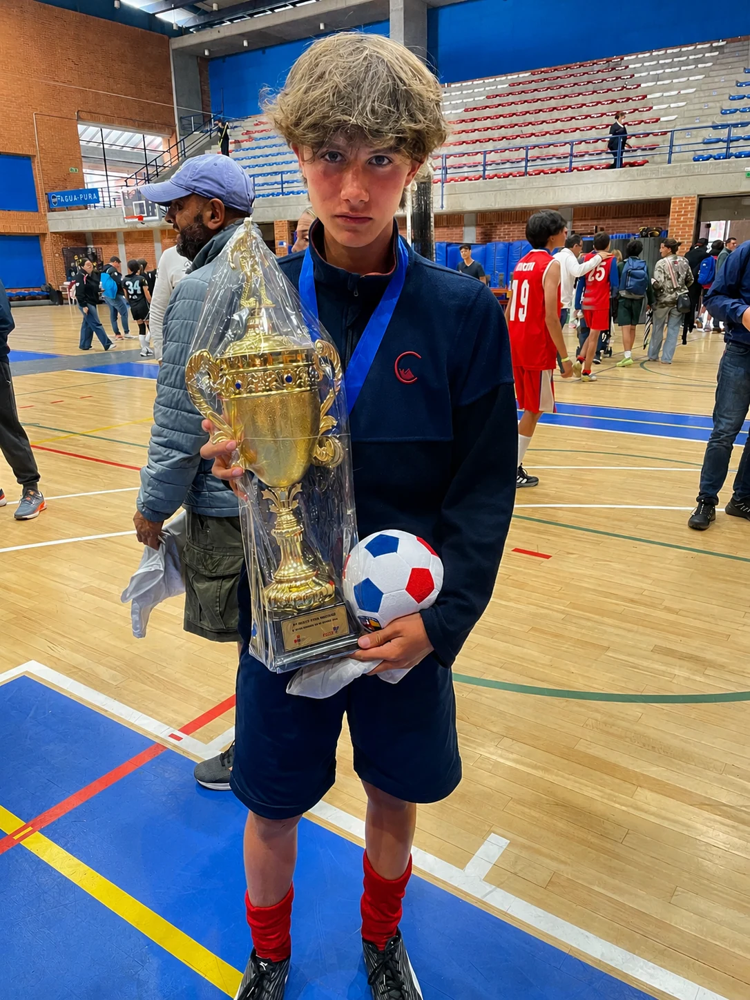

Nacido para jugar
Juan Andrés nació el 10 de febrero de 2010 en Bogotá, Colombia. Su pasión por el fútbol nació con el Mundial de 2014: siendo apenas un niño, veía cada partido los 90 minutos completos y se aprendía las banderas de todos los países. A los 4 años se calzó sus primeros guayos y no paró más.
“Siempre buscando ir un paso adelante, leyendo las jugadas antes de que sucedan.”
Se ha formado en escuelas reconocidas —Los Andes, Independiente Santa Fe, Caterpillar y JDiez— y representa a su colegio, el Gimnasio Los Cerros, en múltiples torneos, dejando huella en campeonatos y subcampeonatos como figura del equipo.
Además de excelente estudiante, lo distingue su forma de entender el juego. Admirador del FC Barcelona, heredó el amor por el fútbol de su abuelo, ligado a Independiente Santa Fe. Hoy, próximo a culminar el colegio, su meta es clara: una beca deportiva para seguir creciendo y dar el salto al fútbol profesional e internacional.